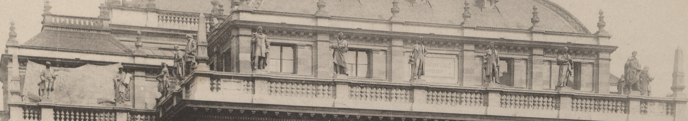

| type | statue |
|---|---|
| name | Guido d'Arezzo (original) |
| wall | A4F_1 |
| position | [5.904, -47.474, 21.3] |
| size | [0.8, 0.7, 2.2] |
| confidence | C |
| notes | Sóskút limestone, set Sept 1881, removed after 1939; subject/sculptor A (S14/S15), position D (original order not documented) |
| sculptor | Donáth Gyula |
| material | Sóskút limestone |
| period | [1881, 1939] |
| sources | S10: Divald: Andrássy úti főhomlokzat 1883 (Rozinay_97) S14: Szobrok az Operaház homlokzatán (opera.hu) S15: Magyar Állami Operaház — hu.wikipedia |

# Composer statues on the attic terraces (CO01–CO16 original, CN01–CN16 replacement) ## Originals (1881–1939) - 16 figures, Sóskút limestone, placed September 1881; subjects chosen June 1880 by the committee chaired by Podmaniczky Frigyes (S14). - Subjects and sculptors (S15 per-sculptor list): Guido d'Arezzo, Pergolesi, Lasso — Donáth Gyula; Palestrina, Peri — Kis(s) György; Weber, Rossini, Lully — Brestyánszky Béla; Gluck, Meyerbeer, Mozart — Szász Gyula; Cherubini, Spontini — Strobl Alajos; Beethoven, Haydn, Wagner — Huszár Adolf. - Standing portrait figures in period costume, each on a balustrade pedestal in front of an attic pilaster (S10 detail). - 19 Jan 1939: a ≈1.5 m statue fell; the rest were removed soon after (S14). The original order on the building is not documented → positions in the model are D. ## Replacements (Dec 1966 per S14; 1965 per S15) - Left to right (S14): Monteverdi, Scarlatti, Gluck, Mozart, Beethoven, Rossini, Donizetti, Glinka, Wagner, Verdi, Gounod, Bizet, Musorgszkij, Csajkovszkij, Moniuszko, Smetana. - Sculptors (S15): Ispánki József (Monteverdi, Smetana), Győry Dezső, Marton László, Tar István, Mikus Sándor, Pátzay Pál, Váradi Sándor, Antal Károly (two each). - Stone: Bulgarian limestone, ≈25 q each (S14) vs Süttő limestone (S15). - No close-up photos of the replacements were reachable (Wikimedia blocked from the build environment).